Top bar
Same seven items- “Admissions” is renamed “Study”: the dropdown holds academics as well as applying.
Before · Concept 14

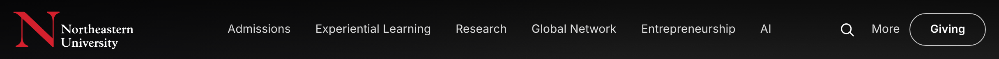
After · Concept 22

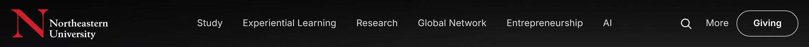
Admissions → Study
Links 13 → 9- Removed: Admissions overview (a chooser page for the three admissions links already listed), Bachelor’s degree completion (an Online program), Orientation and family programs, Academic plan.
- “Academics” becomes the panel’s “Explore academics” link; Financial aid moves into Apply.
Before · Concept 14

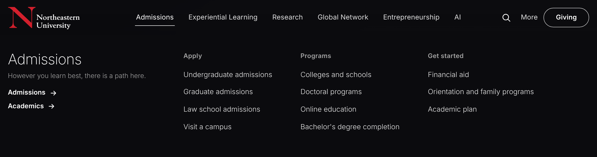
After · Concept 22

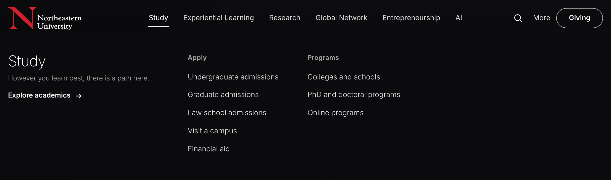
Experiential Learning
Links 4 → 6 · newsroom card kept- Removed: Experiential Opportunities overview (repeats the main overview), Office of the Chancellor.
- Added: the three opportunity types (Academic, Professional, Extracurricular) and “Hire Northeastern students” for employers.
Before · Concept 14

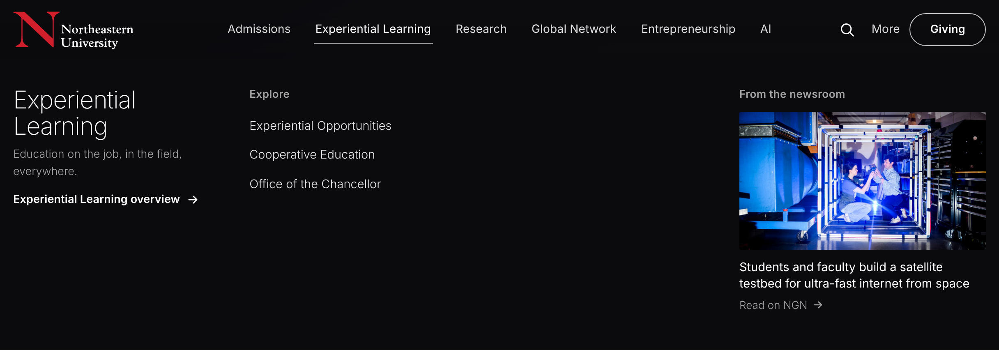
After · Concept 22

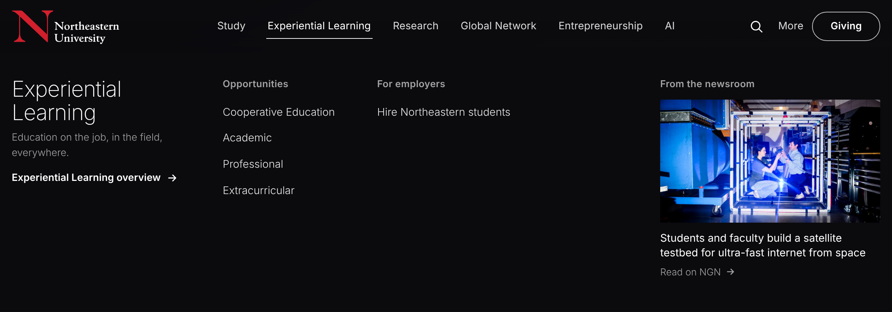
Research
Links 8 → 8 · newsroom card kept- The Health / Security / Sustainability focus areas are replaced by the research site’s current leadership areas: Network Science, Cognitive and Brain Health, Network Engineering.
- Column heading “For researchers” becomes “Explore”, since Undergraduate Research is for students.
Before · Concept 14

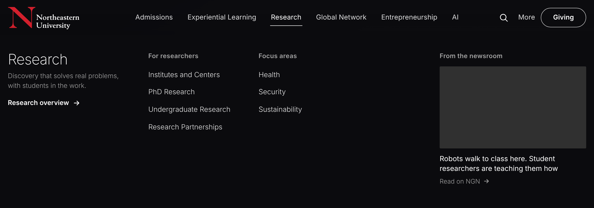
After · Concept 22

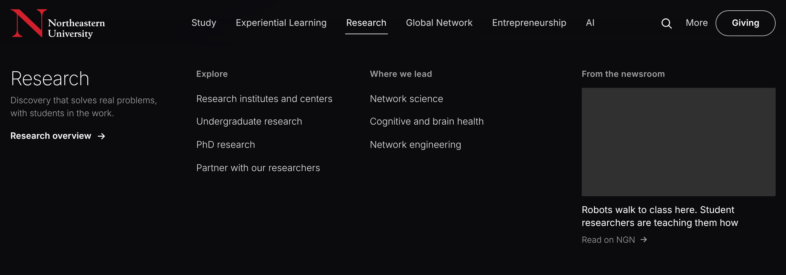
Global Network
Links 21 → 18 (14 are campuses) · newsroom card kept- Removed: Our Global Campuses (the campus list does its job), Global Learning Experiences (parent of Study Abroad), Office of Global Services (part of the International Student Hub), Global Safety and Support.
- Added: N.U.in Program.
- Two columns of general links merge into one.
Before · Concept 14

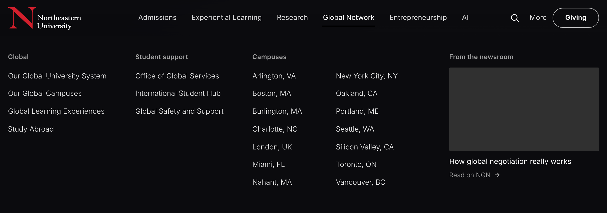
After · Concept 22

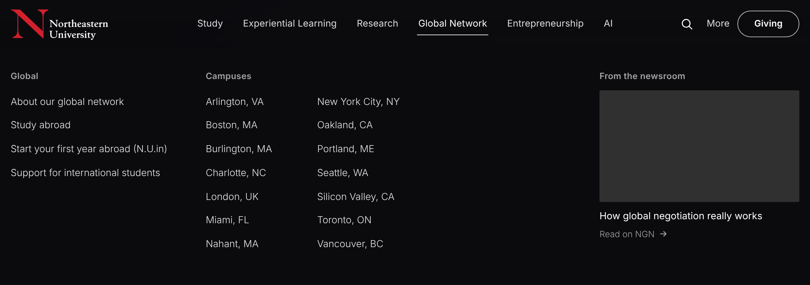
Entrepreneurship
1 link · newsroom card added- The panel is titled “Global Entrepreneurship”; its link becomes the panel’s “Overview” link.
- Added a newsroom story: founders pitching at the London summit.
Before · Concept 14

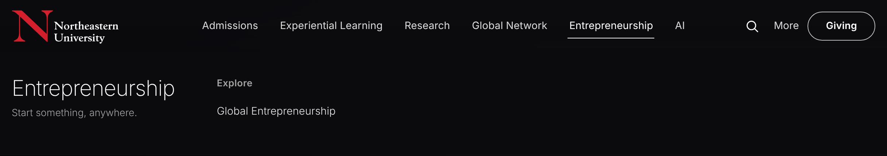
After · Concept 22

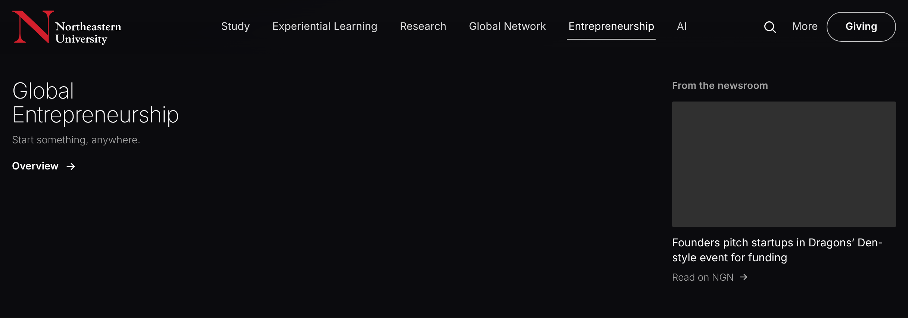
More
Links 14 → 9 · newsroom card kept- Removed: Make a Gift (the Giving button is always visible), Senior Leadership, Public Art.
- Moved to the footer: Belonging, Partnerships.
Before · Concept 14

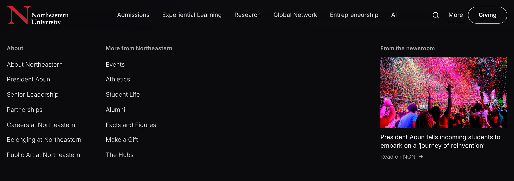
After · Concept 22

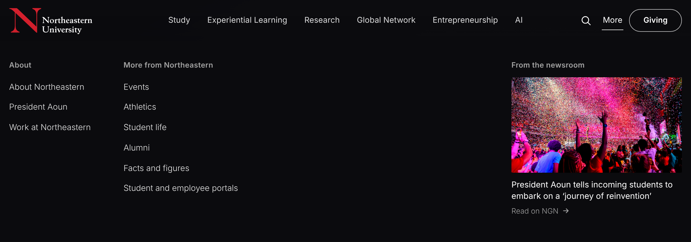
Phone menu
Links 63 → 52 · every group shown open- Same removals as desktop, plus the duplicate “Global overview” link (it went to the same page as “Our Global University System”).
Before · Concept 14

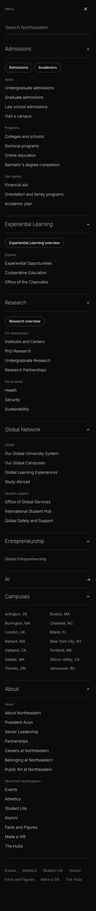
After · Concept 22

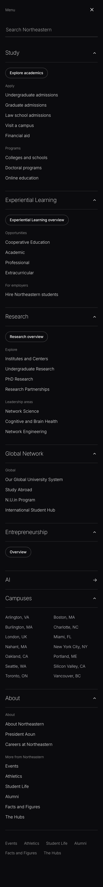